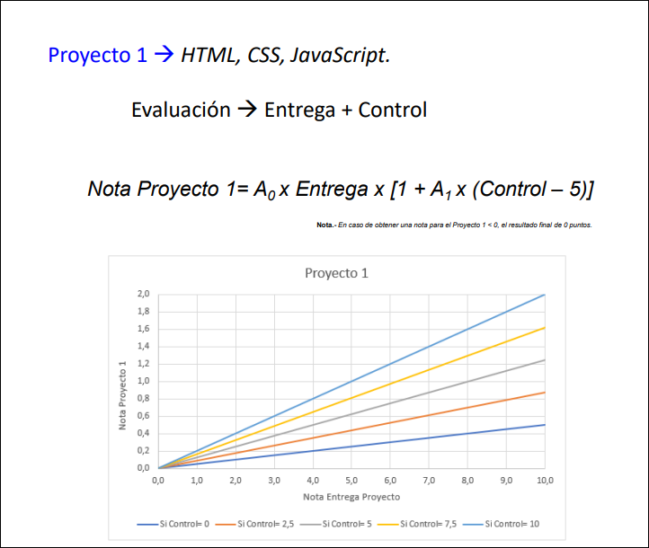
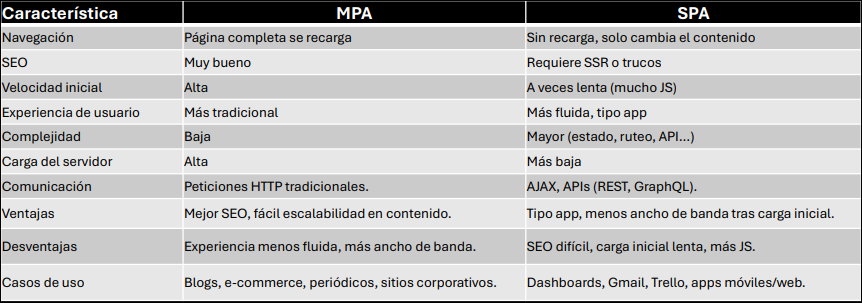
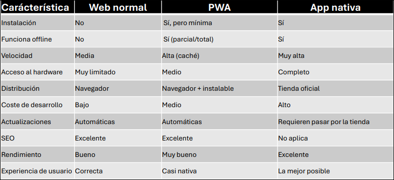
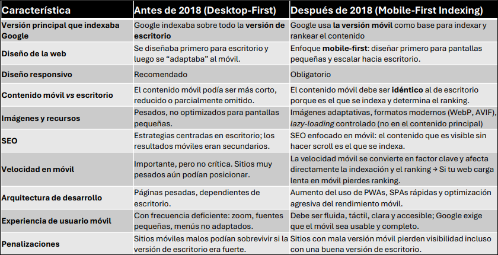
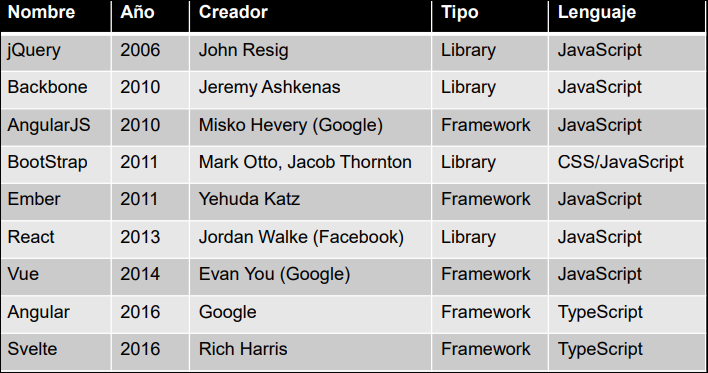

Introducción
Tema 1 de 6 Tercer curso, 2.º cuatrimestre ≈ 6 min de lectura
Temas de DAW · 1/8
Nota
Quiero dejar esto de recuerdo para que quede constancia de lo que se sufría esta asignatura de puta mierda.

1.1 Introducción a la evolución de la computación y la web
Evolución resumida
- Años 40: computación centralizada en grandes máquinas.
- Finales de los 50: varios terminales conectados a un sistema central.
- Años 80: expansión del ordenador personal.
- Finales de los 80 y primera mitad de los 90: auge de las LAN, que conectan equipos dentro de una red local para compartir recursos.
- Segunda mitad de los 90: expansión de Internet como red basada en estándares.
- 2007 en adelante: la computación se desplaza al móvil.
La idea clave es que se pasa de sistemas aislados o locales a un entorno global donde se conectan ordenadores, servidores y otros dispositivos.
De cliente/servidor a la web
Las aplicaciones web siguen un modelo cliente/servidor:
- Cliente: lado del usuario.
- Servidor: lado donde se aloja y procesa la aplicación.
En la web, esto se traduce en:
- navegador = frontend,
- servidor web = backend,
- intercambio de recursos como HTML entre ambos.
Secuencia básica:
- El usuario abre una web en el navegador.
- El navegador solicita la página al servidor.
- El servidor responde con HTML.
- El navegador lo interpreta y lo muestra.
Qué abarcan las tecnologías web
Las tecnologías web son el conjunto de herramientas, lenguajes, protocolos y estándares que permiten crear y ejecutar servicios en la World Wide Web.
Frontend
- HTML: estructura.
- CSS: presentación visual.
- JavaScript: interactividad y lógica en el navegador.
- Frameworks: React, Angular, Vue.
Ejemplo rápido: HTML define un botón, CSS su aspecto y JavaScript lo que ocurre al pulsarlo.
Backend
- Se encarga de lógica, seguridad y acceso a datos.
- Lenguajes / plataformas: Java, PHP, Python, Node.js, .NET.
- Frameworks: Spring, Django, Laravel, Express.
Ejemplo: validar usuario y contraseña en un login.
Bases de datos
- Relacionales: MySQL, PostgreSQL.
- NoSQL: MongoDB.
Protocolos y estándares
- HTTP/HTTPS: comunicación cliente-servidor.
- REST / GraphQL: diseño de APIs.
Servidores web
- Apache
- Nginx
- Tomcat
1.2 Evolución de la tecnología web
Situación inicial.
Hasta los primeros años 2000, la interacción del usuario era reducida y se trabajaba principalmente con HTML, CSS y JavaScript básicos. La construcción de aplicaciones web se limitaba a:
- escribir y guardar código en un editor de texto plano,
- abrir localmente los ficheros en un navegador para comprobar su funcionamiento,
- desplegar los ficheros en un servidor web.
MPA (Multi-Page Application).
La MPA es el modelo tradicional de aplicación web en el que, cada vez que el usuario navega a una nueva ruta, el navegador carga una página HTML distinta desde el servidor.
Ejemplo: entrar en una tienda online y que cada sección cargue una página nueva completa.
Catalizador de 2004: más interacción y aparición de SPA.
En 2004, con el auge de las redes sociales y el nacimiento de Facebook, aumenta la interacción del usuario. Esto trae dos consecuencias principales:
- uso de tecnologías que no requieren recargar la página completa, como AJAX,
- necesidad de reducir ancho de banda y surgimiento de aplicaciones SPA.
SPA (Single Page Application).
Una SPA es una aplicación web que carga una sola página HTML y luego actualiza dinámicamente el contenido mediante JavaScript, sin volver a pedir páginas completas al servidor.
Ejemplo: Gmail o Trello, donde la interfaz cambia sin recargar toda la página.
Comparación entre MPA y SPA.
Importante

Conceptos asociados:
- SEO (Search Engine Optimization): conjunto de técnicas para que una página aparezca más arriba en los buscadores de forma orgánica, sin pagar publicidad.
- SSR (Server-Side Rendering): técnica en la que las páginas se generan en el servidor y se envían al navegador ya renderizadas en HTML completo.
1.3 El impacto del móvil en la web
Catalizador de 2007: el móvil cambia la web.
En 2007 Apple presenta su iPhone 3 y la computación doméstica pasa al bolsillo de las personas. Las implicaciones que se remarcan son:
- Nuevos formatos de pantalla incompatibles entre sí, lo que provoca la aparición de soluciones responsivas.
- Nuevas versiones de navegadores que van incorporando etiquetas según se estandarizan.
- Nuevas aplicaciones con contenido multimedia, redes sociales y geolocalización.
- Aparición de las PWA para competir con apps móviles, gracias a la posibilidad de trabajar sin conexión cacheando recursos.
PWA (Progressive Web Application).
Una PWA es una aplicación web que usa tecnologías que permiten ofrecer una experiencia similar a una app nativa, pero sin necesidad de instalarla desde una tienda, porque funciona desde el navegador.
Ejemplos indicados en las diapositivas:
- Spotify web
- Uber móvil web
- Starbucks app web
Comparación: web normal vs PWA vs app nativa.
Importante

Nota importante sobre PWA.
Al instalar una PWA en el PC, se instalan algunos archivos relacionados con el Service Worker, la cache y otros elementos, pero nunca ficheros HTML o JS. Esos archivos se almacenan en carpetas del usuario relativas al navegador.
1.4 Mobile-First y consecuencias
Catalizador de 2018: Mobile-First Indexing.
En 2018 Google cambia su algoritmo de posicionamiento hacia una política Mobile-First Indexing, debido a que el tráfico móvil superaba al de escritorio.
Consecuencia principal: la responsividad deja de ser recomendable y pasa a ser obligatoria.
Mobile-First Indexing (MFI) significa usar la versión móvil de una web como referencia principal para indexar y posicionar, en lugar de la versión de escritorio. Además, el mismo código HTML vale para móvil y para escritorio.
Importante

Consecuencia general de la evolución web.
La consecuencia de toda esta evolución es que la codificación de una página web se vuelve extremadamente compleja. La solución que se destaca es el uso masivo de JavaScript, que pasa a ser protagonista del desarrollo de aplicaciones, junto con nuevos frameworks y librerías.
1.5 Frameworks, librerías y tecnologías de la asignatura
Frameworks y librerías destacados:

Tecnologías de la asignatura DAW.
Frontend:
- HTML
- CSS
- JavaScript
- jQuery
- BootStrap
Backend:
- Java
- JSP
Servidor web:
- Apache
- Tomcat